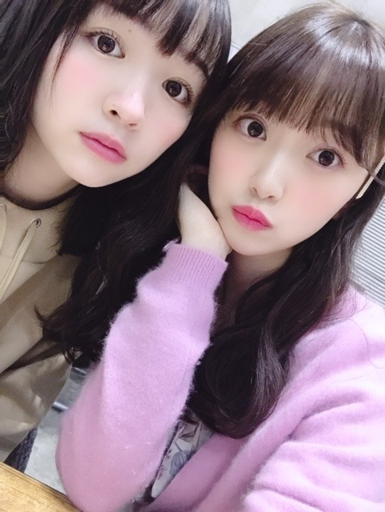
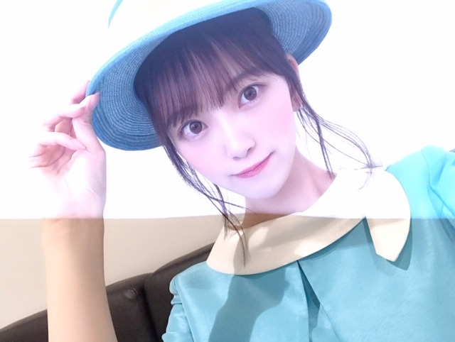

2019/0919Thuニーハイブーツ
gossip girlのサントラを毎日聴いてます〜❤︎
みんなが大胆に、素直に、キラキラと生きている姿がだいすきです☺︎
ブレアのわがままプリンセス感がたまりません！
ファッションも好きだなぁ
まだ全部見れてないから早くみないと> <
今日起きたらもう寒くて、、
あ〜はやく秋冬服が着たいなぁって☺︎
今年は特に、ニーハイブーツをたくさん履きたいの！！
この間撮影で履いたんだけどやっぱりかわいい❤︎
ニーハイブーツ集めなきゃな~

みりみお❤︎

バスガイドいつかやってみたいな~
あ、バスツアーいきたい！
質問ブログつぎあたり?やります❤︎
なので質問コメント受け付けます
答えたことのある質問は基本、変わってないかぎり答えません！
よろしくお願いします~
ではは
2019/09/19 18:54


コメント(1010)
博物館は行ったりする？
映画は見たりする？
未央奈はいつも体育祭でどんな種目に出場してた？
足速いからリレーとかかな？
◎冬はいつも何をして過ごしてるの？
◎ずばり！今、一番、行ってみたい所は？
◎好きなブランドは？
乃木坂の皆さん本当に尊敬してしまいます。
堀未央奈さんにアドバイスもらって次のテストで人生180度変わるのでよろしくお願いします
写真かわいい
質問、4期生の中で仲が良いのは誰ですか？
お酒って飲みますか？
◯未央奈がいいと思うメンズのバッグの形状を教えてください
◯群馬県の印象は？
◯ドライブデートにおすすめの岐阜の観光スポットは？
◯未央奈が免許とったら、まず行ってみたい場所はどこ？
◯車の中で聴いて盛り上がる曲は？
以上です。
ぜひ答えて欲しいです。
塾も終わってやっと三連休！！！
あした映画巡りしてくるんだぁ( *´艸｀)
あのね！毎日Instagramで未央奈ちゃんのお誕生日カウントダウンしててそのとき#に『#未央奈のお誕生日カウントダウン』ってゆうハッシュタグつけて投稿してるからよかったらぐぐって見てみてください！
お誕生日当日たくさんたくさん文章書くね！！！
ほんとに憧れの女の子！目標にして頑張る！
昨日、同期の渡辺みり愛さんのを見させて貰いました。
のぎおび選手権、渡辺さんも1位を狙って頑張りましたが、未央奈さんが出したタイムには届かず、見事1位は未央奈さんでした。
焼き肉食事券ゲット出来て、おめでとうございます。
しかし未央奈さん、以外と食事の時結構な量を食べるようですね。
ファンから見て、かなりスリムですので、全然食べるイメージはなかったですよ。
(⌒‐⌒)
CRYSTALより。
本日公開の“アドアストラ“を観てきたよ
ブラピ主演、トミーリージョーンズが失踪した父親役で出演してる(^^)
淡々と話しが進んでいって、全体的に暗めの内容の作品だったから、正直眠さとの戦いだったグーグーＺＺＺ(レイパーーーーンチo-_-)=○☆(゜ロ゜;ノ)ノ←)
おやすみおなー
好きなのはファッションだけじゃないけど。笑
しつもーん！
狭山茶は飲めましたか？
年に一回は聞いてる質問だ。笑
もしくは、今ハマってる飲み物とかあれば教えて( •ㅈ• )
狭山茶のまっつんより
岐阜でおすすめの場所ありますか？？？
あれば教えてください！
いつも忙しいのにたくさん更新してくれてほんと嬉しいし、ファン思いだな〜って思うよ☺︎
質問は3つあるよ〜！
バスガイド以外にやってみたい職業ある？
今年の冬何色のコートに注目してる？
10月期のドラマ気になるものある？
答えてくれたら嬉しいな❤︎
ツイッターで毎日写真が投稿されてるんだけど、めちゃくちゃ可愛くて癒されるよ！未央奈と同じアーノルド・シュワルツェネッガーが大好きなんだよー！
そこで気づいたのですが、今まで韓国風な美人だと思っていましたが、中華美人の要素も未央奈ちゃんはありますね
未央奈がバスガイドのバスツアー行きたい
(*´∀｀)
ニーハイブーツ履いた写真アップして欲しい！
みりみお(*≧∀≦*)
名前かわいい(///∇///)
質問です！
もし生まれ変わって男になったらどんなファッションしたい？
では(*￣∇￣)ノ
高校生でも買えるようなオススメのコスメとかありますか？
みおなちゃんや前髪好きなんです！
質問です
やはり東海出身のメンバー（でんちゃん、さくらちゃん、あやめん）が集まると会話が～だもんで、～みゃーばかりになるんでしょうか？名古屋で仕事してた時お客さんがみゃーみゃー言ってたので。
堀ちゃんの朝のルーティン教えて！！！
という人は思いつくでしょうか？ 話が尽きなそう とか 本音が出てしまいそう とか... 乃木坂以外の誰かと。
仕事がテーマでなくてもいいんです 対談企画を見たいなーと思っています。出来たら生で！
ニーハイブーツの写真アップして欲しい！
みりみおかわいい(*´∀｀)
名前かわいい( ´∀｀)
バスツアー行きたい(///∇///)
イベントでやって欲しい！
質問です(*´∀`)♪
もしも生まれ変わって男になったらどんなファッションしたいですか？
では(*￣∇￣)ノ
ロングヘアー可愛い！白のお洋服がすっごい似合っているし、みりみおのお写真の口が、好き！仲の良さが伝わってきます。
質問
何て呼ばれたら嬉しいですか？
雑誌に、名字以外なら良いとかいていたので、具体的に教えてもらいたいです。
今日もみおなちゃんが大好きです！！！！
界くんかっこいいね！！取り巻きの友達もすごいいい人でこんな青春したかったなぁって思っちゃった笑笑 ホットギミック とは違う感じだけど、私はホットギミック のが何回も観ちゃうなぁ笑笑 ホットギミックのサウンドトラックあったら欲しい！秋になるとメイクとかファッションとか堀ちゃんのブログ参考になるし、楽しみにしてる！！毎回ネイルが可愛い！！
質問！堀ちゃんの得意料理ってありますか？あと、初心者でも簡単に作れる料理ってある？？
気温の変化激しいけど
体調気を付けて
SONYでした
コメントする